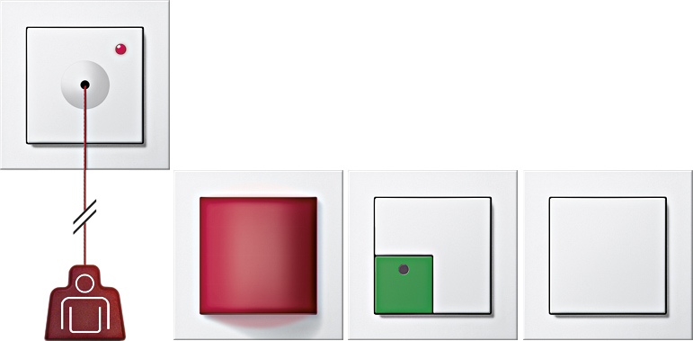

Gira Giersiepen GmbH & Co. KG
Gira Notrufset
Das Gira Notrufset eignet sich ideal für Sanitärbereiche, öffentliche Gebäude oder Privatwohnungen. Mit dem Gira Notrufset, bestehend aus Rufmodul, Zugtaster, Abstelltaster und Netzteil, können Menschen im Notfall auf sich aufmerksam machen. Das Gira Notrufset erfüllt die DIN-Normen 18040-1 sowie DIN VDE 0834.
Kontakt
Industriegebiet Mermbach, Dahlienstraße | 42477 Radevormwald | Deutschland
Jürgen Langenhorst | Key Account Projektmanager Health Care
Telefon +49 173 7296550 | juergen.langenhorst@gira.de